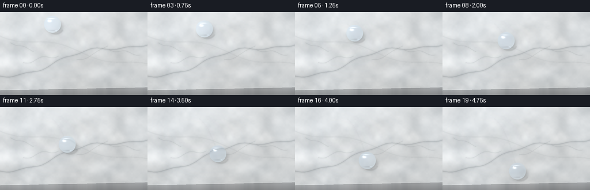
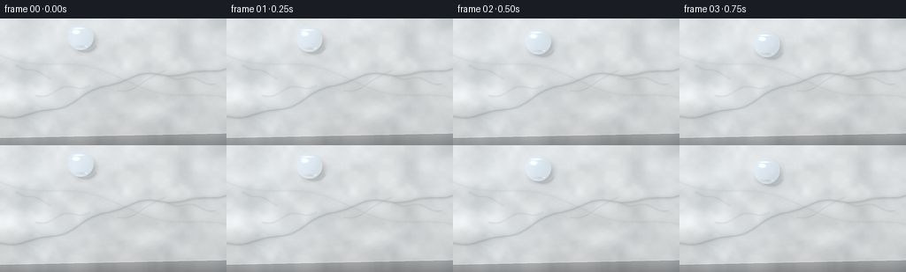

CODING AGENTS AS PIXEL WORLD MODELS
traex/GPT-5.6-Sol · mechanics_0053
点击播放 · 原生 RGB 像素
逐轮保存的候选
回放视频、检查图与代码变化。
每份候选均可单独播放。实际图片检查记录在下方工具轨迹中。
候选 01播放与检查图
点击播放 · 原生 RGB 像素


展开代码变化
--- 上一保存版本
+++ 本次保存版本
@@ -0,0 +1,228 @@
+from pathlib import Path
+import json, math
+import numpy as np
+from PIL import Image, ImageDraw, ImageFilter
+import artifact_io
+
+CASE_DIR = Path(__file__).resolve().parent
+SPEC = json.loads((CASE_DIR / "task_spec.json").read_text())
+W, H = int(SPEC["width"]), int(SPEC["height"])
+N, FPS = int(SPEC["frames"]), float(SPEC["fps"])
+SS = 3
+w, h = W * SS, H * SS
+rng = np.random.default_rng(5319)
+
+
+def smooth_noise(out_h, out_w, cell, seed_offset=0):
+ """Deterministic, softly interpolated mineral grain."""
+ rr = np.random.default_rng(5319 + seed_offset)
+ gh = max(3, out_h // cell + 3)
+ gw = max(3, out_w // cell + 3)
+ grid = rr.normal(0, 1, (gh, gw)).astype(np.float32)
+ lo = Image.fromarray(grid, mode="F")
+ return np.asarray(lo.resize((out_w, out_h), Image.Resampling.BICUBIC), dtype=np.float32)
+
+
+def marble_surface():
+ yy, xx = np.mgrid[0:h, 0:w].astype(np.float32)
+ # Warm, lightly blue-grey Carrara base under soft daylight.
+ n1 = smooth_noise(h, w, 72, 1)
+ n2 = smooth_noise(h, w, 25, 2)
+ n3 = smooth_noise(h, w, 8, 3)
+ mineral = 6.0*n1 + 2.4*n2 + 0.7*n3
+ light = 9.0 * (1.0 - yy/h) + 3.0 * (1.0 - xx/w)
+ base = np.empty((h, w, 3), np.float32)
+ base[..., 0] = 210 + mineral + light
+ base[..., 1] = 213 + mineral*0.94 + light
+ base[..., 2] = 214 + mineral*0.89 + light*1.04
+
+ # Broad cloudy calcite patches.
+ cloud = smooth_noise(h, w, 130, 7)
+ cloud = np.clip(cloud, -1.5, 1.5)
+ base += cloud[..., None] * np.array([4.0, 4.5, 5.0], np.float32)
+
+ im = Image.fromarray(np.uint8(np.clip(base, 0, 255)), "RGB")
+
+ def apply_vein(points, width_px, color, opacity, blur=0.0):
+ nonlocal im
+ mask = Image.new("L", (w, h), 0)
+ d = ImageDraw.Draw(mask)
+ pts = [(int(x*SS), int(y*SS)) for x, y in points]
+ d.line(pts, fill=opacity, width=max(1, int(width_px*SS)), joint="curve")
+ if blur:
+ mask = mask.filter(ImageFilter.GaussianBlur(blur*SS))
+ layer = Image.new("RGB", (w, h), color)
+ im = Image.composite(layer, im, mask)
+
+ # Main diagonal mineral vein, layered to look embedded rather than painted.
+ xs = np.linspace(-20, 280, 90)
+ p1 = [(x, 111 - .245*x + 7.5*math.sin(x/31) + 2.0*math.sin(x/9.5)) for x in xs]
+ apply_vein(p1, 9.0, (164, 170, 173), 35, 4.0)
+ apply_vein(p1, 2.1, (119, 127, 131), 72, 1.2)
+ apply_vein(p1, .55, (91, 99, 103), 95, .20)
+
+ # Crossing vein, soft and sparse.
+ xs2 = np.linspace(-30, 285, 80)
+ p2 = [(x, 38 + .225*x + 6.0*math.sin(x/25 + .7)) for x in xs2]
+ apply_vein(p2, 5.5, (174, 178, 179), 27, 3.0)
+ apply_vein(p2, 1.0, (131, 139, 141), 49, .7)
+
+ # Natural hairline branches split away from the larger vein.
+ branches = [
+ [(40+i, 96-.21*(40+i)+3*math.sin(i/7)) for i in range(0, 64, 2)],
+ [(133+i, 82-.12*i-0.006*i*i+2*math.sin(i/8)) for i in range(0, 56, 2)],
+ [(189+i, 65+.16*i+2.2*math.sin(i/6)) for i in range(0, 55, 2)],
+ [(18+i, 53+.35*i+1.5*math.sin(i/5)) for i in range(0, 42, 2)],
+ ]
+ for j, pts in enumerate(branches):
+ apply_vein(pts, 2.0, (153, 159, 161), 30, 1.0)
+ apply_vein(pts, .42, (104, 112, 115), 64, .18)
+
+ arr = np.asarray(im).astype(np.float32)
+ # Glossy, gently inclined counter surface: broad window illumination.
+ window = np.exp(-((xx/w - .18)/.34)**2) * np.exp(-((yy/h - .07)/.58)**2)
+ arr += window[..., None] * np.array([6.0, 7.0, 8.0])
+
+ # Countertop front edge establishes the material as a slab.
+ edge = (136.0 - 0.020*np.arange(W)) * SS
+ for X in range(w):
+ e = int(edge[min(W-1, X//SS)])
+ if e < h:
+ depth = np.arange(h-e, dtype=np.float32)[:, None]
+ source = arr[max(0, e-3):max(1, e-2), X:X+1, :]
+ col = np.tile(source, (h-e, 1, 1))[:, 0, :]
+ shade = 0.78 - .14*np.minimum(depth[:, 0]/(15*SS), 1)
+ col = col*shade[:, None] + np.array([3, 3, 4])
+ # Subtle vertical stone grain on the cut face.
+ col += 2.0*math.sin(X/(11*SS))
+ arr[e:, X, :] = col
+ # crisp polished bevel
+ for off, add in [(-2, 8), (-1, 13), (0, -14), (1, -8)]:
+ yi = e + off
+ if 0 <= yi < h:
+ arr[yi, X, :] += add
+
+ # Physically plausible lens falloff, kept subtle.
+ nx = (xx - w*.50)/(w*.72)
+ ny = (yy - h*.48)/(h*.82)
+ vig = np.clip((nx*nx + ny*ny)*13.0, 0, 15)
+ arr -= vig[..., None]
+ return np.uint8(np.clip(arr, 0, 255))
+
+
+BASE = marble_surface()
+
+
+def droplet_center(t):
+ # Gravity-driven travel: slow departure, then a smooth, gently accelerating slide.
+ y = 21.0 + 90.0*(0.19*t + 0.81*t**1.42)
+ x = 91.0 + 39.0*t + 3.0*math.sin(math.pi*t)
+ return x, y
+
+
+def bilinear_sample(img, sx, sy):
+ ih, iw = img.shape[:2]
+ sx = np.clip(sx, 0, iw-1.001)
+ sy = np.clip(sy, 0, ih-1.001)
+ x0 = np.floor(sx).astype(np.int32); y0 = np.floor(sy).astype(np.int32)
+ x1 = np.minimum(x0+1, iw-1); y1 = np.minimum(y0+1, ih-1)
+ ax = (sx-x0)[..., None]; ay = (sy-y0)[..., None]
+ a = img[y0, x0].astype(np.float32)*(1-ax) + img[y0, x1].astype(np.float32)*ax
+ b = img[y1, x0].astype(np.float32)*(1-ax) + img[y1, x1].astype(np.float32)*ax
+ return a*(1-ay) + b*ay
+
+
+def render_frame(index):
+ t = index/(N-1)
+ cx0, cy0 = droplet_center(t)
+ cx, cy = cx0*SS, cy0*SS
+ radius = (14.8 + .18*math.sin(index*.85))*SS
+
+ # Work on an RGBA/PIL copy for the soft cast shadow, caustic, and microscopic wet track.
+ frame_im = Image.fromarray(BASE.copy(), "RGB")
+ track = Image.new("RGBA", (w, h), (0,0,0,0))
+ td = ImageDraw.Draw(track)
+ history = [droplet_center(k/(N-1)) for k in range(index+1)]
+ if len(history) > 1:
+ pts = [(int(x*SS), int(y*SS)) for x,y in history]
+ # A barely visible polished wet trace, terminating beneath the bead.
+ td.line(pts, fill=(85, 102, 108, 12), width=max(2, SS), joint="curve")
+ td.line([(x-SS, y-SS) for x,y in pts], fill=(255,255,255,14), width=1*SS, joint="curve")
+ track = track.filter(ImageFilter.GaussianBlur(.45*SS))
+ frame_im = Image.alpha_composite(frame_im.convert("RGBA"), track).convert("RGB")
+
+ effects = Image.new("RGBA", (w, h), (0,0,0,0))
+ ed = ImageDraw.Draw(effects)
+ # Tight contact shadow is displaced away from the upper-left softbox.
+ shadow_box = [cx-radius*.91+3.8*SS, cy-radius*.72+5.5*SS,
+ cx+radius*.91+3.8*SS, cy+radius*.72+5.5*SS]
+ ed.ellipse(shadow_box, fill=(40, 47, 50, 67))
+ effects = effects.filter(ImageFilter.GaussianBlur(3.2*SS))
+ frame_im = Image.alpha_composite(frame_im.convert("RGBA"), effects).convert("RGB")
+
+ # A slim refractive caustic just beyond the bead's lower-right edge.
+ caust = Image.new("RGBA", (w,h), (0,0,0,0))
+ cd = ImageDraw.Draw(caust)
+ box = [cx-radius*.76+4.3*SS, cy-radius*.55+5.3*SS,
+ cx+radius*.96+4.3*SS, cy+radius*.80+5.3*SS]
+ cd.arc(box, start=18, end=132, fill=(246,252,255,78), width=max(1, int(1.2*SS)))
+ caust = caust.filter(ImageFilter.GaussianBlur(.7*SS))
+ frame_im = Image.alpha_composite(frame_im.convert("RGBA"), caust).convert("RGB")
+ arr = np.asarray(frame_im).astype(np.float32).copy()
+
+ # Render a true spherical cap: circular silhouette, curved refraction, Fresnel rim.
+ pad = int(radius + 3*SS)
+ x0=max(0,int(cx-pad)); x1=min(w,int(cx+pad+1))
+ y0=max(0,int(cy-pad)); y1=min(h,int(cy+pad+1))
+ Y,X=np.mgrid[y0:y1,x0:x1].astype(np.float32)
+ u=(X-cx)/radius; v=(Y-cy)/radius
+ rho2=u*u+v*v
+ inside=rho2 <= 1.0
+ z=np.sqrt(np.maximum(0.0, 1.0-rho2))
+
+ # Convex-water lens magnifies and slightly shifts the marble seen through it.
+ lens_scale=.47 + .16*rho2
+ sx=cx + (X-cx)*lens_scale - 1.1*SS*(1-z)
+ sy=cy + (Y-cy)*lens_scale - 1.5*SS*(1-z)
+ refr=bilinear_sample(BASE, sx, sy)
+ refr *= np.array([.967, .993, 1.018], np.float32)
+
+ # Spherical illumination under a large upper-left window.
+ L=np.array([-.48,-.57,.67],np.float32); L/=np.linalg.norm(L)
+ ndotl=np.clip(u*L[0]+v*L[1]+z*L[2],0,1)
+ refr += (ndotl[...,None]-.46)*np.array([8.0,9.0,10.5])
+ fres=(1-z)**1.30
+ rim_col=np.array([224,239,244],np.float32)
+ refr = refr*(1-(.20*fres)[...,None]) + rim_col*(.20*fres)[...,None]
+
+ # Reflected softbox: a broad oblong plus a sharp pin catchlight.
+ soft=np.exp(-(((u+.34)/.27)**2 + ((v+.39)/.16)**2)*2.0)
+ pin=np.exp(-(((u+.47)/.075)**2 + ((v+.49)/.065)**2)*2.0)
+ streak=np.exp(-(((u+.15)/.50)**2 + ((v+.67)/.070)**2)*2.0)
+ hi=np.clip(82*soft + 112*pin + 39*streak, 0, 135)
+ refr += hi[...,None] * np.array([1.0,1.0,1.0])
+
+ # Dark lower contact crescent and brilliant lower caustic make the sphere stand off the stone.
+ lower=np.exp(-(((u-.13)/.74)**2 + ((v-.73)/.115)**2)*2.0)
+ refr -= lower[...,None]*np.array([15.,16.,16.])
+ glint=np.exp(-(((u-.42)/.19)**2 + ((v-.72)/.075)**2)*2.0)
+ refr += glint[...,None]*np.array([26.,30.,32.])
+
+ # Smooth analytic edge alpha (plus final supersample downsampling).
+ alpha=np.clip((1.0-rho2)*radius*.75,0,1)
+ # Keep interior optically clear; edge remains antialiased.
+ alpha=np.where(rho2 < .94, 1.0, alpha)
+ patch=arr[y0:y1,x0:x1]
+ a=(alpha*inside)[...,None]
+ patch[:]=patch*(1-a)+np.clip(refr,0,255)*a
+ arr[y0:y1,x0:x1]=patch
+
+ # Downsample once for clean subpixel edges and a photographic finish.
+ out=Image.fromarray(np.uint8(np.clip(arr,0,255)),"RGB").resize((W,H),Image.Resampling.LANCZOS)
+ return np.asarray(out,dtype=np.uint8)
+
+
+frames=np.stack([render_frame(i) for i in range(N)],axis=0)
+assert frames.shape == (N,H,W,3) and frames.dtype == np.uint8
+artifact_io.save(frames, CASE_DIR)
+print(f"saved {N} RGB frames at {W}x{H}, {FPS:g} fps")
可观测工具轨迹
实际执行的命令与返回图片。
命令 1exit 0
/bin/bash -lc "ls -la && printf '\\n--- prompt.txt ---\\n' && cat prompt.txt && printf '\\n--- GENERATION_RULES.md ---\\n' && cat GENERATION_RULES.md && printf '\\n--- task_spec.json ---\\n' && cat task_spec.json"
命令 2exit 0
/bin/bash -lc "find . -maxdepth 2 -type f -printf '%p\\n' | sort"
命令 3exit 0
/bin/bash -lc "sed -n '1,240p' artifact_io.py"
命令 4exit 0
/bin/bash -lc "python - <<'PY'
import numpy,PIL
print('numpy',numpy.__version__,'PIL',PIL.__version__)
PY
command -v ffmpeg || true"命令 5exit 0
/bin/bash -lc "cat > generate.py <<'PY'
from pathlib import Path
import json, math
import numpy as np
from PIL import Image, ImageDraw, ImageFilter
import artifact_io
CASE_DIR = Path(__file__).resolve().parent
SPEC = json.loads((CASE_DIR / \"task_spec.json\").read_text())
W, H = int(SPEC[\"width\"]), int(SPEC[\"height\"])
N, FPS = int(SPEC[\"frames\"]), float(SPEC[\"fps\"])
SS = 3
w, h = W * SS, H * SS
rng = np.random.default_rng(5319)
def smooth_noise(out_h, out_w, cell, seed_offset=0):
\"\"\"Deterministic, softly interpolated mineral grain.\"\"\"
rr = np.random.default_rng(5319 + seed_offset)
gh = max(3, out_h // cell + 3)
gw = max(3, out_w // cell + 3)
grid = rr.normal(0, 1, (gh, gw)).astype(np.float32)
lo = Image.fromarray(grid, mode=\"F\")
return np.asarray(lo.resize((out_w, out_h), Image.Resampling.BICUBIC), dtype=np.float32)
def marble_surface():
yy, xx = np.mgrid[0:h, 0:w].astype(np.float32)
# Warm, lightly blue-grey Carrara base under soft daylight.
n1 = smooth_noise(h, w, 72, 1)
n2 = smooth_noise(h, w, 25, 2)
n3 = smooth_noise(h, w, 8, 3)
mineral = 6.0*n1 + 2.4*n2 + 0.7*n3
light = 9.0 * (1.0 - yy/h) + 3.0 * (1.0 - xx/w)
base = np.empty((h, w, 3), np.float32)
base[..., 0] = 210 + mineral + light
base[..., 1] = 213 + mineral*0.94 + light
base[..., 2] = 214 + mineral*0.89 + light*1.04
# Broad cloudy calcite patches.
cloud = smooth_noise(h, w, 130, 7)
cloud = np.clip(cloud, -1.5, 1.5)
base += cloud[..., None] * np.array([4.0, 4.5, 5.0], np.float32)
im = Image.fromarray(np.uint8(np.clip(base, 0, 255)), \"RGB\")
def apply_vein(points, width_px, color, opacity, blur=0.0):
nonlocal im
mask = Image.new(\"L\", (w, h), 0)
d = ImageDraw.Draw(mask)
pts = [(int(x*SS), int(y*SS)) for x, y in points]
d.line(pts, fill=opacity, width=max(1, int(width_px*SS)), joint=\"curve\")
if blur:
mask = mask.filter(ImageFilter.GaussianBlur(blur*SS))
layer = Image.new(\"RGB\", (w, h), color)
im = Image.composite(layer, im, mask)
# Main diagonal mineral vein, layered to look embedded rather than painted.
xs = np.linspace(-20, 280, 90)
p1 = [(x, 111 - .245*x + 7.5*math.sin(x/31) + 2.0*math.sin(x/9.5)) for x in xs]
apply_vein(p1, 9.0, (164, 170, 173), 35, 4.0)
apply_vein(p1, 2.1, (119, 127, 131), 72, 1.2)
apply_vein(p1, .55, (91, 99, 103), 95, .20)
# Crossing vein, soft and sparse.
xs2 = np.linspace(-30, 285, 80)
p2 = [(x, 38 + .225*x + 6.0*math.sin(x/25 + .7)) for x in xs2]
apply_vein(p2, 5.5, (174, 178, 179), 27, 3.0)
apply_vein(p2, 1.0, (131, 139, 141), 49, .7)
# Natural hairline branches split away from the larger vein.
branches = [
[(40+i, 96-.21*(40+i)+3*math.sin(i/7)) for i in range(0, 64, 2)],
[(133+i, 82-.12*i-0.006*i*i+2*math.sin(i/8)) for i in range(0, 56, 2)],
[(189+i, 65+.16*i+2.2*math.sin(i/6)) for i in range(0, 55, 2)],
[(18+i, 53+.35*i+1.5*math.sin(i/5)) for i in range(0, 42, 2)],
]
for j, pts in enumerate(branches):
apply_vein(pts, 2.0, (153, 159, 161), 30, 1.0)
apply_vein(pts, .42, (104, 112, 115), 64, .18)
arr = np.asarray(im).astype(np.float32)
# Glossy, gently inclined counter surface: broad window illumination.
window = np.exp(-((xx/w - .18)/.34)**2) * np.exp(-((yy/h - .07)/.58)**2)
arr += window[..., None] * np.array([6.0, 7.0, 8.0])
# Countertop front edge establishes the material as a slab.
edge = (136.0 - 0.020*np.arange(W)) * SS
for X in range(w):
e = int(edge[min(W-1, X//SS)])
if e < h:
depth = np.arange(h-e, dtype=np.float32)[:, None]
source = arr[max(0, e-3):max(1, e-2), X:X+1, :]
col = np.tile(source, (h-e, 1, 1))[:, 0, :]
shade = 0.78 - .14*np.minimum(depth[:, 0]/(15*SS), 1)
col = col*shade[:, None] + np.array([3, 3, 4])
# Subtle vertical stone grain on the cut face.
col += 2.0*math.sin(X/(11*SS))
arr[e:, X, :] = col
# crisp polished bevel
for off, add in [(-2, 8), (-1, 13), (0, -14), (1, -8)]:
yi = e + off
if 0 <= yi < h:
arr[yi, X, :] += add
# Physically plausible lens falloff, kept subtle.
nx = (xx - w*.50)/(w*.72)
ny = (yy - h*.48)/(h*.82)
vig = np.clip((nx*nx + ny*ny)*13.0, 0, 15)
arr -= vig[..., None]
return np.uint8(np.clip(arr, 0, 255))
BASE = marble_surface()
def droplet_center(t):
# Gravity-driven travel: slow departure, then a smooth, gently accelerating slide.
y = 21.0 + 90.0*(0.19*t + 0.81*t**1.42)
x = 91.0 + 39.0*t + 3.0*math.sin(math.pi*t)
return x, y
def bilinear_sample(img, sx, sy):
ih, iw = img.shape[:2]
sx = np.clip(sx, 0, iw-1.001)
sy = np.clip(sy, 0, ih-1.001)
x0 = np.floor(sx).astype(np.int32); y0 = np.floor(sy).astype(np.int32)
x1 = np.minimum(x0+1, iw-1); y1 = np.minimum(y0+1, ih-1)
ax = (sx-x0)[..., None]; ay = (sy-y0)[..., None]
a = img[y0, x0].astype(np.float32)*(1-ax) + img[y0, x1].astype(np.float32)*ax
b = img[y1, x0].astype(np.float32)*(1-ax) + img[y1, x1].astype(np.float32)*ax
return a*(1-ay) + b*ay
def render_frame(index):
t = index/(N-1)
cx0, cy0 = droplet_center(t)
cx, cy = cx0*SS, cy0*SS
radius = (14.8 + .18*math.sin(index*.85))*SS
# Work on an RGBA/PIL copy for the soft cast shadow, caustic, and microscopic wet track.
frame_im = Image.fromarray(BASE.copy(), \"RGB\")
track = Image.new(\"RGBA\", (w, h), (0,0,0,0))
td = ImageDraw.Draw(track)
history = [droplet_center(k/(N-1)) for k in range(index+1)]
if len(history) > 1:
pts = [(int(x*SS), int(y*SS)) for x,y in history]
# A barely visible polished wet trace, terminating beneath the bead.
td.line(pts, fill=(85, 102, 108, 12), width=max(2, SS), joint=\"curve\")
td.line([(x-SS, y-SS) for x,y in pts], fill=(255,255,255,14), width=1*SS, joint=\"curve\")
track = track.filter(ImageFilter.GaussianBlur(.45*SS))
frame_im = Image.alpha_composite(frame_im.convert(\"RGBA\"), track).convert(\"RGB\")
effects = Image.new(\"RGBA\", (w, h), (0,0,0,0))
ed = ImageDraw.Draw(effects)
# Tight contact shadow is displaced away from the upper-left softbox.
shadow_box = [cx-radius*.91+3.8*SS, cy-radius*.72+5.5*SS,
cx+radius*.91+3.8*SS, cy+radius*.72+5.5*SS]
ed.ellipse(shadow_box, fill=(40, 47, 50, 67))
effects = effects.filter(ImageFilter.GaussianBlur(3.2*SS))
frame_im = Image.alpha_composite(frame_im.convert(\"RGBA\"), effects).convert(\"RGB\")
# A slim refractive caustic just beyond the bead's lower-right edge.
caust = Image.new(\"RGBA\", (w,h), (0,0,0,0))
cd = ImageDraw.Draw(caust)
box = [cx-radius*.76+4.3*SS, cy-radius*.55+5.3*SS,
cx+radius*.96+4.3*SS, cy+radius*.80+5.3*SS]
cd.arc(box, start=18, end=132, fill=(246,252,255,78), width=max(1, int(1.2*SS)))
caust = caust.filter(ImageFilter.GaussianBlur(.7*SS))
frame_im = Image.alpha_composite(frame_im.convert(\"RGBA\"), caust).convert(\"RGB\")
arr = np.asarray(frame_im).astype(np.float32).copy()
# Render a true spherical cap: circular silhouette, curved refraction, Fresnel rim.
pad = int(radius + 3*SS)
x0=max(0,int(cx-pad)); x1=min(w,int(cx+pad+1))
y0=max(0,int(cy-pad)); y1=min(h,int(cy+pad+1))
Y,X=np.mgrid[y0:y1,x0:x1].astype(np.float32)
u=(X-cx)/radius; v=(Y-cy)/radius
rho2=u*u+v*v
inside=rho2 <= 1.0
z=np.sqrt(np.maximum(0.0, 1.0-rho2))
# Convex-water lens magnifies and slightly shifts the marble seen through it.
lens_scale=.47 + .16*rho2
sx=cx + (X-cx)*lens_scale - 1.1*SS*(1-z)
sy=cy + (Y-cy)*lens_scale - 1.5*SS*(1-z)
refr=bilinear_sample(BASE, sx, sy)
refr *= np.array([.967, .993, 1.018], np.float32)
# Spherical illumination under a large upper-left window.
L=np.array([-.48,-.57,.67],np.float32); L/=np.linalg.norm(L)
ndotl=np.clip(u*L[0]+v*L[1]+z*L[2],0,1)
refr += (ndotl[...,None]-.46)*np.array([8.0,9.0,10.5])
fres=(1-z)**1.30
rim_col=np.array([224,239,244],np.float32)
refr = refr*(1-(.20*fres)[...,None]) + rim_col*(.20*fres)[...,None]
# Reflected softbox: a broad oblong plus a sharp pin catchlight.
soft=np.exp(-(((u+.34)/.27)**2 + ((v+.39)/.16)**2)*2.0)
pin=np.exp(-(((u+.47)/.075)**2 + ((v+.49)/.065)**2)*2.0)
streak=np.exp(-(((u+.15)/.50)**2 + ((v+.67)/.070)**2)*2.0)
hi=np.clip(82*soft + 112*pin + 39*streak, 0, 135)
refr += hi[...,None] * np.array([1.0,1.0,1.0])
# Dark lower contact crescent and brilliant lower caustic make the sphere stand off the stone.
lower=np.exp(-(((u-.13)/.74)**2 + ((v-.73)/.115)**2)*2.0)
refr -= lower[...,None]*np.array([15.,16.,16.])
glint=np.exp(-(((u-.42)/.19)**2 + ((v-.72)/.075)**2)*2.0)
refr += glint[...,None]*np.array([26.,30.,32.])
# Smooth analytic edge alpha (plus final supersample downsampling).
alpha=np.clip((1.0-rho2)*radius*.75,0,1)
# Keep interior optically clear; edge remains antialiased.
alpha=np.where(rho2 < .94, 1.0, alpha)
patch=arr[y0:y1,x0:x1]
a=(alpha*inside)[...,None]
patch[:]=patch*(1-a)+np.clip(refr,0,255)*a
arr[y0:y1,x0:x1]=patch
# Downsample once for clean subpixel edges and a photographic finish.
out=Image.fromarray(np.uint8(np.clip(arr,0,255)),\"RGB\").resize((W,H),Image.Resampling.LANCZOS)
return np.asarray(out,dtype=np.uint8)
frames=np.stack([render_frame(i) for i in range(N)],axis=0)
assert frames.shape == (N,H,W,3) and frames.dtype == np.uint8
artifact_io.save(frames, CASE_DIR)
print(f\"saved {N} RGB frames at {W}x{H}, {FPS:g} fps\")
PY
python generate.py
ls -lh pixels.npz inspection.png transition_check.png index.html frames/00.png frames/19.png"命令 6exit 0
/bin/bash -lc "python - <<'PY'
from PIL import Image
im=Image.open('inspection.png')
# crop out labels and tile imagery into a smaller preview preserving representative frames
# inspection dimensions 1024 x 330, image rows y21:165 and y186:330
out=Image.new('RGB',(512,144))
for j,idx in enumerate([0,1,2,3]):
tile=im.crop((idx*256,21,(idx+1)*256,165)).resize((128,72))
out.paste(tile,(j*128,0))
for j,idx in enumerate([0,1,2,3]):
tile=im.crop((idx*256,186,(idx+1)*256,330)).resize((128,72))
out.paste(tile,(j*128,72))
out.save('.tmp/preview.png')
print(out.size)
PY"命令 7exit 0
/bin/bash -lc "python - <<'PY'
import numpy as np, json
from PIL import Image
fs=np.stack([np.asarray(Image.open(f'frames/{i:02d}.png')) for i in range(20)])
print('shape/dtype/range',fs.shape,fs.dtype,fs.min(),fs.max())
for i in range(1,20):
d=np.max(abs(fs[i].astype(int)-fs[i-1].astype(int)),axis=2)
ys,xs=np.where(d>3)
print(f'{i-1:02d}->{i:02d}: changed={len(xs):4d}, bbox=({xs.min():3d},{ys.min():3d})-({xs.max():3d},{ys.max():3d}), mean_delta={d.mean():.3f}')
z=np.load('pixels.npz')['pixels']
print('packed tensor',z.shape,z.dtype,'exact first frame',np.array_equal(((fs[0,:,:,0].astype(np.uint32)<<16)|(fs[0,:,:,1].astype(np.uint32)<<8)|fs[0,:,:,2]),z[:,:,0]))
PY"保存候选 1 份；完成命令 7 次；可验证图片返回 0 张。原始 API 响应与完整日志保留在本地。